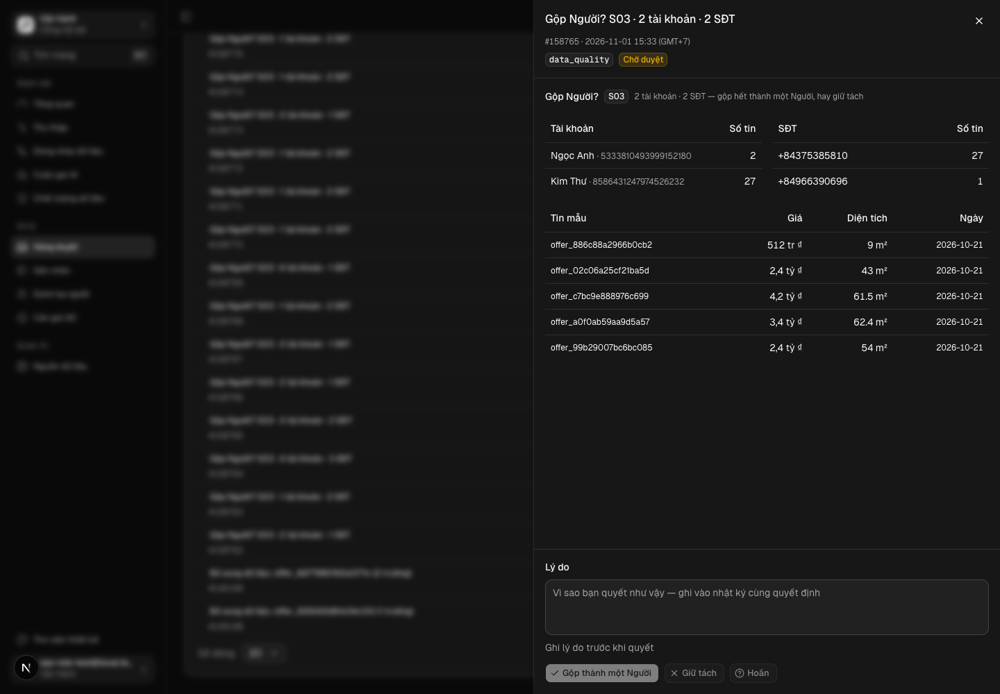
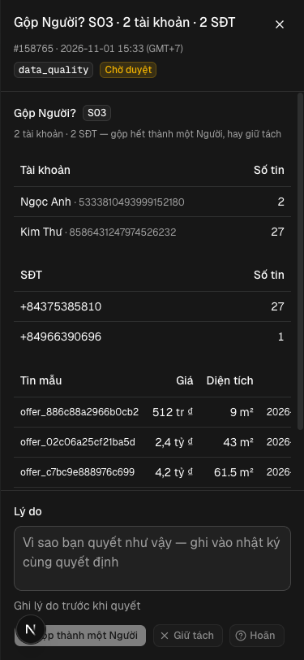

Thẻ duyệt Người cho ca nhiều–nhiều trên /ops/review — SĐT nhiều người gửi, người gửi nhiều SĐT thành thẻ; người duyệt chọn gộp hay giữ tách, quyết định áp qua luật xác định ở bước dựng danh bạ, có vết và đảo được
Vì sao làm
Thẻ duyệt Người cho ca nhiều–nhiều trên /ops/review: một SĐT nhiều người gửi, hay một người gửi nhiều SĐT, thành thẻ để người duyệt quyết gộp hay tách; quyết định áp qua luật xác định, có vết và đảo được
Đã hứa
- AC-1 — Given tin sống S03/S05 có nhóm liên thông tài khoản ↔ SĐT không một–một (≥ 2 tài khoản hoặc ≥ 2 SĐT), When dựng danh bạ, Then mỗi nhóm có đúng một thẻ chờ `review_queue` loại `data_quality` mã `nguoi:<S0x>:<băm thành viên>`; nhóm một–một, tin nghỉ và tin S06 không sinh thẻ.
- AC-2 — Given lượt dựng vừa sinh thẻ, When dựng lượt hai không đổi dữ liệu, Then 0 thẻ mới; mỗi nhóm đang sống có đúng một thẻ hiệu lực — thẻ chờ, hoặc thẻ người đã quyết (gộp, giữ tách, hoãn) cùng mã; thẻ máy đóng (người làm `dung-nguoi`) không tính, nên nhóm co rồi giãn về đúng hình cũ được sinh lại thẻ chờ.
- AC-3 — Given nhóm có thẻ chờ, When một tài khoản hay SĐT mới nối vào nhóm, Then lượt dựng sinh đúng một thẻ chờ cho nhóm mới và đóng thẻ chờ cũ ở `deferred` với ghi chú trỏ mã thẻ mới (người làm `dung-nguoi`); thẻ đã quyết của nhóm cũ giữ nguyên; không dòng nào bị xoá.
- AC-4 — Given thẻ vừa sinh, When đọc `evidence`, Then có mã nguồn `S0x`, mỗi tài khoản (ID, tên, số tin sống), mỗi SĐT E.164 (số tin sống) và tối đa 5 tin mẫu (mã tin, giá, diện tích, ngày); không chứa tên nguồn thật (`source_registry.real_name`) hay khoá tầng A nào.
- AC-5 — Given thẻ `approved`, When dựng danh bạ lượt kế, Then các Người của đúng thành viên ghi trong `evidence` của thẻ (không phải nhóm hiện tại nếu nhóm đã đổi) về một người cuối là người tài khoản đang active có `party_key` nhỏ nhất; thành viên đang `split` bị loại khỏi lần gộp; không còn người tài khoản active thì không gộp và lượt dựng in số thẻ không áp được; mỗi lần gộp đúng một sự kiện `gop` lý do `the-duyet:<id> <S0x>`; vai về người đích; lượt sau đó ghi 0 gộp; việc áp xảy ra cả khi công tắc gộp tự động tắt.
- AC-6 — Given thẻ `rejected` hay `deferred`, When dựng danh bạ, Then không Người nào của nhóm bị gộp theo thẻ, và không thẻ trùng nào được sinh.
- AC-7 — Given một Người đã gộp theo thẻ, When tách bằng `dung-nguoi.mjs --tach <party_key> --ly-do «…»`, Then người ấy về `split`, có sự kiện `tach`, vai sống trả về như trước lần gộp, và lượt dựng sau không gộp lại dù thẻ vẫn `approved`.
- AC-8 — Given thẻ chờ loại `data_quality` mã `nguoi:` trên `/ops/review` với vai ops, When người duyệt ghi lý do và bấm «Gộp thành một Người», «Giữ tách» hay «Hoãn», Then thẻ hiện tiêu đề «Gộp Người?», bảng tài khoản và SĐT, tin mẫu, ba nút tắt khi lý do trống; route decide nhận đúng `approved` / `rejected` / `deferred`; thẻ đã quyết hiện nhãn «Đã gộp» / «Giữ tách» / «Hoãn» kèm lý do.
- AC-9 — Given thẻ `approved` đã áp, When chạy thước nạp lại của HD13 (`pipeline/scripts/nap-lai-nguoi.mjs`) và bộ test HD13, Then người cuối mang ≥ 2 SĐT chỉ hợp lệ khi chuỗi gộp có sự kiện `the-duyet:` (người mang ≥ 2 SĐT không có sự kiện ấy làm thước đỏ); không lần gộp nào nối hai nguồn; `pipeline/scripts/danh-ba-nguoi.test.mjs` và `danh-ba-nguoi.itest.mjs` xanh và không đổi so với merge-base.
- AC-10 — Given DB thử chép từ DB máy thu, When dựng danh bạ hai lượt trong giao dịch ROLLBACK, Then số thẻ chờ sau lượt một bằng số nhóm nhiều–nhiều đếm độc lập theo nguồn (in hai số), lượt hai 0 thẻ mới.
Thiết kế
docs/superpowers/specs/2026-11-01-the-duyet-nguoi-nhieu-nhieu-design.md
Quyết định
- 2026-11-01 · Máy · approach · S1 — Đã tra tri thức: thẻ duyệt Người cho ca nhiều–nhiềuKho đã khai tri_thuc — bước thiết kế tra trang trước khi chọn.
- 2026-11-01 · Máy · approach · S1 — Hỏi-1: một thẻ cho mỗi nhóm liên thông tài khoản–SĐT, người duyệt quyết cả nhóm (gộp hết thành một Người, hay giữ tách hết); gộp một phần ra ngoài phạm vi.Ca nhiều–nhiều là đồ thị liên thông; thẻ theo nhóm cho đúng một thẻ mỗi ca như ngưỡng hàng HD17, thẻ theo cặp thì một ca thành nhiều thẻ chồng nhau.
- 2026-11-01 · Máy · approach · S1 — Hỏi-2: quyết định «gộp» của người duyệt áp ở lượt dựng kế ngay cả khi công tắc gộp tự động danh-ba:gop-sdt đang tắt.Công tắc của HD13 canh luật một–một do máy tự gộp; thẻ duyệt là quyết định của người nên có hiệu lực riêng.
- 2026-11-01 · Máy · approach · S1 — Hỏi-3: thẻ Người dùng loại thẻ có sẵn data_quality với mã nguoi: (không migration, hạng T2), thay vì thêm loại thẻ riêng vào review_queue bằng migration (hạng T3).Route decide đã có tiền lệ nhận diện thẻ theo loại + tiền tố mã (agent_output + enrich:, app/src/app/api/v1/ops/review/[id]/decide/route.ts dòng 76); loại mới phải sửa CHECK của 029 bằng migration mới và triển khai lên DB máy thu.
- 2026-11-01 · Máy · approach · S1 — Áp quyết định ở bước dựng danh bạ (dungNguoi) bằng luật xác định; route decide giữ nguyên đường chung.parties và hàm gộp/tách của HD13 nằm ở pipeline/lib/danh-ba-nguoi.mjs; áp trong route phải chép logic gộp sang TypeScript và mở đường ghi parties từ app.
- 2026-11-01 · Máy · approach · S1 — Đích gộp của nhóm là người tài khoản có party_key nhỏ nhất (ULID — cũ nhất); bất biến HD13 «không người hai SĐT» nhận ngoại lệ khi chuỗi gộp có sự kiện the-duyet.Luật gộp phải tất định (AGENTS luật 7); ngưỡng hàng HD13 viết «không Người nào gộp hai SĐT khác nhau mà không có bí danh nối» — sự kiện the-duyet là bí danh nối.
- 2026-11-01 · Máy · descope · S1 — bỏ design-pass — thẻ nằm trong khung thẻ duyệt sẵn có của /ops/review (ReviewReason, PendingActions, DoneState), chỉ thêm thân thẻ; eval ui-check E9 chụp thẻ thật ở S4Thân thẻ ghép từ phần đã cài; hạn mức tuần 92% lúc mở vòng.
- 2026-11-01 · Máy · descope · S1 — bỏ coverage-scan — quét tay bốn trục ở ## Coverage của hợp đồng thay cho skill morphological-scan; đổi lại không có bằng chứng độ phủ của skillKhông gian AC nhỏ, bốn trục rời đã liệt kê đủ giá trị.
- 2026-11-01 · Máy · approach · S1 — Đích gộp của nhóm là người tài khoản đang active có party_key nhỏ nhất (ULID — cũ nhất); thành viên split bị loại; thẻ áp đúng thành viên ghi trong evidence.Luật gộp phải tất định và không gộp lại người đã tách (HD13 AC-6); đích theo người theo SĐT hay chọn ngẫu nhiên làm vai đổi chủ qua mỗi lượt.
- 2026-11-01 · Máy · approach · S1 — Hỏi-4: bất biến HD13 «không người cuối nào mang hai SĐT khác nhau» nhận ngoại lệ khi chuỗi gộp có sự kiện the-duyet (thẻ anh duyệt), sửa thước nap-lai-nguoi.mjs của HD13 cho khớp.Ngưỡng hàng HD13 viết «không Người nào gộp hai SĐT khác nhau mà không có bí danh nối»; gap-probe chỉ ra coi một lần bấm duyệt là «bí danh nối» là diễn giải lại ngưỡng đã ký, nên để anh quyết.
- 2026-11-01 · Người (Mạnh) · approach · gate1 — Hỏi-1, Hỏi-2, Hỏi-3, Hỏi-4 = lối máy khuyên: một thẻ một nhóm quyết cả nhóm; thẻ duyệt áp cả khi công tắc gộp tắt; loại thẻ data_quality + nguoi: (T2); bất biến HD13 nhận ngoại lệ the-duyet.Mạnh gõ «/acceptance-gate:approve the-duyet-nguoi-nhieu-nhieu duyệt» trên thẻ Cổng Phạm vi mang bốn khuyến nghị.
- 2026-11-01 · Người · seal · gate1 —
- 2026-11-01 · Máy · fix · S1 — Dòng đỏ đường nền «executors.test.agent mã 1» là KD-AC-7 đỏ trên main d96640c6 (đã gỡ bởi #261, ed0ff2cd); nhánh đã gộp main mới, suite agent chạy lại 146/146 xanh.Đường nền chạy trên cây tách từ d96640c6, trước khi #261 vào main.
- 2026-11-01 · Máy · fix · S3 — Sửa chữ kỳ vọng E2, E8, E13 cho khớp test đã viết; không đổi tiêu chí nàoE2: chiều đỏ gặp approved trước rejected nên thông điệp ghim là «approved»; E8: vai viewer không bao giờ tới thẻ (review-content dừng ở nhánh đếm) và ca này đã có VT-AC-2 trong viewer-the-duyet.test.tsx, nút tắt khi gửi là của PendingActions dùng chung; E13: đếm độc lập bằng hợp-tìm trong JS trên dòng thô thay vì SQL, vẫn không gọi hàm bộ dựng
- 2026-11-01 · Máy · approach · S3 — E9 chấm trên máy dev :3462 trỏ DB thử oneinvest_u2_nguoi (18 thẻ Người do dung-nguoi.mjs dựng), không trên :3456 với DB dùng chungDB dùng chung chưa có thẻ nguoi: nào; dựng thẻ ở đó bằng mã chưa merge sẽ đẩy thẻ chờ lên cloud qua cloud-sync và lộ cho phiên khác
- 2026-11-01 · Máy · fix · S4-r1 — Vòng sửa 1 chỉ sửa phần trong hợp đồng: thêm review-card-nguoi.tsx vào danh sách quét chữ ops (suite app đỏ); TN-AC-7 so bằng trọn ba cột vai; TN-AC-4 đỏ khi DB thử không có tên nguồn thật để so; TN-AC-2 lượt hai đòi đúng 0 thẻ mới; TN-AC-10 gạt thẻ có sẵn trong giao dịch thay vì bỏ quarejectFindings t5 (AC-7), t6 (AC-4), t9 (AC-2) và lệnh suite cd app && npm test; TN-AC-10 bỏ qua ở vòng 1 vì máy dev E9 đã dựng 18 thẻ trên DB thử, nên AC-10 chưa được đo
Bằng chứng
Các eval
| Eval | Tiêu chí | Loại | Verdict | run_id | verified_at |
|---|---|---|---|---|---|
| E1 | AC-1 | test | PASS | minted-the-duyet-nguoi-nhieu-nhieu-E1-r1 | 2026-11-01T09:18:21Z |
| E2 | AC-2 | test | PASS | minted-the-duyet-nguoi-nhieu-nhieu-E2-r2 | 2026-11-01T10:36:44Z |
| E3 | AC-3 | test | PASS | minted-the-duyet-nguoi-nhieu-nhieu-E3-r2 | 2026-11-01T10:36:44Z |
| E4 | AC-4 | test | PASS | minted-the-duyet-nguoi-nhieu-nhieu-E4-r2 | 2026-11-01T10:36:44Z |
| E5 | AC-5 | test | PASS | minted-the-duyet-nguoi-nhieu-nhieu-E5-r2 | 2026-11-01T10:36:44Z |
| E6 | AC-6 | test | PASS | minted-the-duyet-nguoi-nhieu-nhieu-E6-r2 | 2026-11-01T10:36:44Z |
| E7 | AC-7 | test | PASS | minted-the-duyet-nguoi-nhieu-nhieu-E7-r2 | 2026-11-01T10:36:44Z |
| E8 | AC-8 | test | PASS | minted-the-duyet-nguoi-nhieu-nhieu-E8-r1 | 2026-11-01T09:18:21Z |
| E9 | AC-8 | ui-check | PASS | minted-the-duyet-nguoi-nhieu-nhieu-E9-r1 | 2026-11-01T09:18:21Z |
| E10 | AC-9 | test | PASS | minted-the-duyet-nguoi-nhieu-nhieu-E10-r1 | 2026-11-01T09:18:21Z |
| E11 | AC-9 | test | PASS | minted-the-duyet-nguoi-nhieu-nhieu-E11-r1 | 2026-11-01T09:18:21Z |
| E12 | AC-9 | test | PASS | minted-the-duyet-nguoi-nhieu-nhieu-E12-r2 | 2026-11-01T10:36:44Z |
| E13 | AC-10 | test | PASS | minted-the-duyet-nguoi-nhieu-nhieu-E13-r2 | 2026-11-01T10:36:44Z |
Chi tiết từng eval
PASS E1 · test
AC-1: Given tin sống S03/S05 có nhóm liên thông tài khoản ↔ SĐT không một–một (≥ 2 tài khoản hoặc ≥ 2 SĐT), When dựng danh bạ, Then mỗi nhóm có đúng một thẻ chờ `review_queue` loại `data_quality` mã `nguoi:<S0x>:<băm thành viên>`; nhóm một–một, tin nghỉ và tin S06 không sinh thẻ.
PASS E2 · test
AC-2: Given lượt dựng vừa sinh thẻ, When dựng lượt hai không đổi dữ liệu, Then 0 thẻ mới; mỗi nhóm đang sống có đúng một thẻ hiệu lực — thẻ chờ, hoặc thẻ người đã quyết (gộp, giữ tách, hoãn) cùng mã; thẻ máy đóng (người làm `dung-nguoi`) không tính, nên nhóm co rồi giãn về đúng hình cũ được sinh lại thẻ chờ.
ℹ duration_ms 23676.02025
PASS E3 · test
AC-3: Given nhóm có thẻ chờ, When một tài khoản hay SĐT mới nối vào nhóm, Then lượt dựng sinh đúng một thẻ chờ cho nhóm mới và đóng thẻ chờ cũ ở `deferred` với ghi chú trỏ mã thẻ mới (người làm `dung-nguoi`); thẻ đã quyết của nhóm cũ giữ nguyên; không dòng nào bị xoá.
ℹ duration_ms 23676.02025
PASS E4 · test
AC-4: Given thẻ vừa sinh, When đọc `evidence`, Then có mã nguồn `S0x`, mỗi tài khoản (ID, tên, số tin sống), mỗi SĐT E.164 (số tin sống) và tối đa 5 tin mẫu (mã tin, giá, diện tích, ngày); không chứa tên nguồn thật (`source_registry.real_name`) hay khoá tầng A nào.
ℹ duration_ms 23676.02025
PASS E5 · test
AC-5: Given thẻ `approved`, When dựng danh bạ lượt kế, Then các Người của đúng thành viên ghi trong `evidence` của thẻ (không phải nhóm hiện tại nếu nhóm đã đổi) về một người cuối là người tài khoản đang active có `party_key` nhỏ nhất; thành viên đang `split` bị loại khỏi lần gộp; không còn người tài khoản active thì không gộp và lượt dựng in số thẻ không áp được; mỗi lần gộp đúng một sự kiện `gop` lý do `the-duyet:<id> <S0x>`; vai về người đích; lượt sau đó ghi 0 gộp; việc áp xảy ra cả khi công tắc gộp tự động tắt.
ℹ duration_ms 23676.02025
PASS E6 · test
AC-6: Given thẻ `rejected` hay `deferred`, When dựng danh bạ, Then không Người nào của nhóm bị gộp theo thẻ, và không thẻ trùng nào được sinh.
ℹ duration_ms 23676.02025
PASS E7 · test
AC-7: Given một Người đã gộp theo thẻ, When tách bằng `dung-nguoi.mjs --tach <party_key> --ly-do «…»`, Then người ấy về `split`, có sự kiện `tach`, vai sống trả về như trước lần gộp, và lượt dựng sau không gộp lại dù thẻ vẫn `approved`.
ℹ duration_ms 23676.02025
PASS E8 · test
AC-8: Given thẻ chờ loại `data_quality` mã `nguoi:` trên `/ops/review` với vai ops, When người duyệt ghi lý do và bấm «Gộp thành một Người», «Giữ tách» hay «Hoãn», Then thẻ hiện tiêu đề «Gộp Người?», bảng tài khoản và SĐT, tin mẫu, ba nút tắt khi lý do trống; route decide nhận đúng `approved` / `rejected` / `deferred`; thẻ đã quyết hiện nhãn «Đã gộp» / «Giữ tách» / «Hoãn» kèm lý do.
PASS E9 · ui-check
AC-8: Given thẻ chờ loại `data_quality` mã `nguoi:` trên `/ops/review` với vai ops, When người duyệt ghi lý do và bấm «Gộp thành một Người», «Giữ tách» hay «Hoãn», Then thẻ hiện tiêu đề «Gộp Người?», bảng tài khoản và SĐT, tin mẫu, ba nút tắt khi lý do trống; route decide nhận đúng `approved` / `rejected` / `deferred`; thẻ đã quyết hiện nhãn «Đã gộp» / «Giữ tách» / «Hoãn» kèm lý do.



PASS E10 · test
AC-9: Given thẻ `approved` đã áp, When chạy thước nạp lại của HD13 (`pipeline/scripts/nap-lai-nguoi.mjs`) và bộ test HD13, Then người cuối mang ≥ 2 SĐT chỉ hợp lệ khi chuỗi gộp có sự kiện `the-duyet:` (người mang ≥ 2 SĐT không có sự kiện ấy làm thước đỏ); không lần gộp nào nối hai nguồn; `pipeline/scripts/danh-ba-nguoi.test.mjs` và `danh-ba-nguoi.itest.mjs` xanh và không đổi so với merge-base.
PASS E11 · test
AC-9: Given thẻ `approved` đã áp, When chạy thước nạp lại của HD13 (`pipeline/scripts/nap-lai-nguoi.mjs`) và bộ test HD13, Then người cuối mang ≥ 2 SĐT chỉ hợp lệ khi chuỗi gộp có sự kiện `the-duyet:` (người mang ≥ 2 SĐT không có sự kiện ấy làm thước đỏ); không lần gộp nào nối hai nguồn; `pipeline/scripts/danh-ba-nguoi.test.mjs` và `danh-ba-nguoi.itest.mjs` xanh và không đổi so với merge-base.
PASS E12 · test
AC-9: Given thẻ `approved` đã áp, When chạy thước nạp lại của HD13 (`pipeline/scripts/nap-lai-nguoi.mjs`) và bộ test HD13, Then người cuối mang ≥ 2 SĐT chỉ hợp lệ khi chuỗi gộp có sự kiện `the-duyet:` (người mang ≥ 2 SĐT không có sự kiện ấy làm thước đỏ); không lần gộp nào nối hai nguồn; `pipeline/scripts/danh-ba-nguoi.test.mjs` và `danh-ba-nguoi.itest.mjs` xanh và không đổi so với merge-base.
ℹ duration_ms 18009.392084
PASS E13 · test
AC-10: Given DB thử chép từ DB máy thu, When dựng danh bạ hai lượt trong giao dịch ROLLBACK, Then số thẻ chờ sau lượt một bằng số nhóm nhiều–nhiều đếm độc lập theo nguồn (in hai số), lượt hai 0 thẻ mới.
ℹ duration_ms 23676.02025
Eval không phân biệt (Analyst)
Vòng verify
- Round 1: S4 vòng 1 bị trả lại, thước trong hợp đồng được sửa (commit fdfc21d2). Returned to implementation.
- Round 2: chạy lại E2-E7, E12, E13 và sáu lệnh suite, tất cả xanh; E1, E8, E9, E10, E11 carry-forward từ round 1 vì delta không chạm paths của chúng.
Tài nguyên
| Khối | Tác tử | Token đầu ra |
|---|---|---|
| S4 round 1 | 22 | 69.680 |
| S4 round 2 | 15 | 36.642 |
2 lượt chấm · tổng 106.322 token
Giới hạn và ngoài hợp đồng
- Gộp một phần nhóm (chọn từng cặp tài khoản–SĐT).
- Ca khác nguồn (S06 chưa có SĐT — HD12).
- Thẻ Người trên cloud.
- Gợi ý của model cho thẻ (`ai_suggestion` rỗng).
Giao
chưa ghi quan sát production
Giá trị
- Câu hỏi phép đo trả lời: [đề xuất] đã đạt «Mọi ca nhiều–nhiều mà bộ dựng danh bạ đếm (SĐT nhiều người gửi, người gửi nhiều SĐT) có đúng một thẻ trên /ops/review; người duyệt chọn gộp thì hai Người về một, chọn tách thì giữ nguyên; tách lại một lần gộp không mất dữ liệu» chưa? — chưa đo
- Kết quả nào là SỐNG: [đề xuất] Mọi ca nhiều–nhiều mà bộ dựng danh bạ đếm (SĐT nhiều người gửi, người gửi nhiều SĐT) có đúng một thẻ trên /ops/review; người duyệt chọn gộp thì hai Người về một, chọn tách thì giữ nguyên; tách lại một lần gộp không mất dữ liệu — chưa đo
- Kết quả nào là CHẾT: [đề xuất] chưa đạt «Mọi ca nhiều–nhiều mà bộ dựng danh bạ đếm (SĐT nhiều người gửi, người gửi nhiều SĐT) có đúng một thẻ trên /ops/review; người duyệt chọn gộp thì hai Người về một, chọn tách thì giữ nguyên; tách lại một lần gộp không mất dữ liệu» khi hết timebox — chưa đo
- Timebox: … — chưa đo